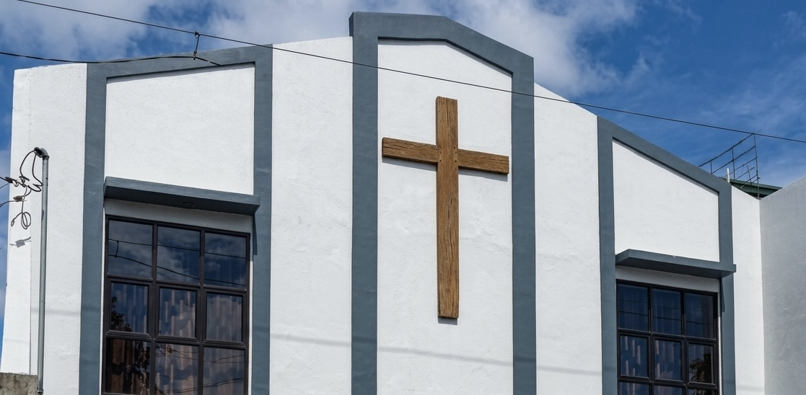

Building Up in Christ, Reaching Out in Love.

Rooted in biblical truth and woven together by faith, we’ve grown from a small home gathering to a thriving community serving Metro Manila.
Founded in 1985 with just 12 families meeting in a living room, we’ve stayed true to our call to worship God and serve others – growing through His grace each step of the way.
To glorify God by making disciples of Jesus Christ, equipping believers for ministry, and sharing His love through acts of service in our community and beyond.
To be a vibrant, Christ-centered fellowship that transforms lives, strengthens families, and shines as a beacon of hope for the Philippines and the world.
Guided by Pastor Mario Talatala and Pastor Ivan Galarpe and a team of dedicated elders, our leadership is grounded in Scripture and committed to shepherding our flock with care and wisdom.
These core focus areas guide how we live out our faith and serve God’s people.
We share the good news of Jesus through community outreach, street missions, digital media, and personal relationships – making the gospel accessible to all.
We nurture spiritual growth through small groups, Bible studies, mentorship programs, and training workshops that build mature followers of Christ.
We strengthen homes with counseling, retreats, parenting classes, and family-focused events that honor God’s design for relationships.
We equip the next generation through Sunday School, youth camps, leadership training, and creative programs that help young people discover their purpose.